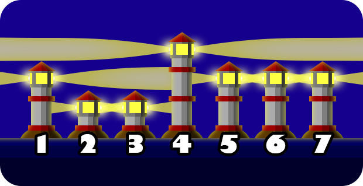
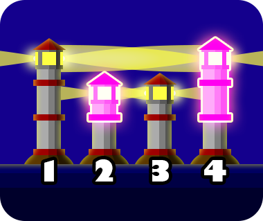

Pak Dengklek owns $N$ lighthouses located on a straight line. The lighthouses are numbered from $1$ to $N$ from west to east. The height of lighthouse $i$ is $A_i$ metres.
There is a lamp at the top of each lighthouse. The lamp from lighthouse $i$ emits light to the west and to the east at the height of $A_i$ metres. Two lamps from two different lighthouses $p$ and $q$ ($p \ne q$) illuminate each other if and only if:
Pak Dengklek wants each lamp to be illuminated by at least one other lamp. As an example, consider the following illustration.

Here, lamps from lighthouse $2$ and lighthouse $3$ illuminate each other, and so do lamps from lighthouse $5$ and lighthouse $6$ and lamps from lighthouse $6$ and lighthouse $7$. However, the lighthouses do not satisfy the requirement, as the lamps from lighthouse $1$ and lighthouse $4$ are not illuminated by any other lamps.
To satisfy the requirement, Pak Dengklek can increase the height of any lighthouse, which costs one million rupiahs per metre. Pak Dengklek can choose to increase the heights of zero or more lighthouses. Help Pak Dengklek determine the minimum possible total cost to satisfy the requirement!
The input is given with the following format:
N A1 A2 … AN
Output a line containing an integer representing the minimum possible total cost in million rupiahs.
6 2 1 1 3 2 2
1
Pak Dengklek can increase the height of lighthouse $1$ from $2$ metres to $3$ metres, costing $1$ million rupiahs.
4 3 1 2 1
3
Pak Dengklek can increase the heights of the lighthouses as follows.
The total cost that Pak Dengklek needs is $1 + 2 = 3$ million rupiahs. Then, the heights of the lighthouses from west to east will become $3$, $2$, $2$, $3$, respectively. With this, the lamps from lighthouses $1$ and $4$ will illuminate each other, and so do lighthouses $2$ and $3$, as illustrated by the following image.

Pak Dengklek can also choose to increase the heights of the lighthouses so that the heights from west to east become $3$, $3$, $2$, $2$, respectively, with the same total cost.
8 17 10 13 11 11 8 14 14
11
Pak Dengklek can increase the heights of the lighthouses as follows.
The total cost that Pak Dengklek needs is $7 + 1 + 3 = 11$ million rupiahs. With this, the heights of the lighthouses from west to east will become $17$, $17$, $14$, $11$, $11$, $11$, $14$, $14$, respectively.